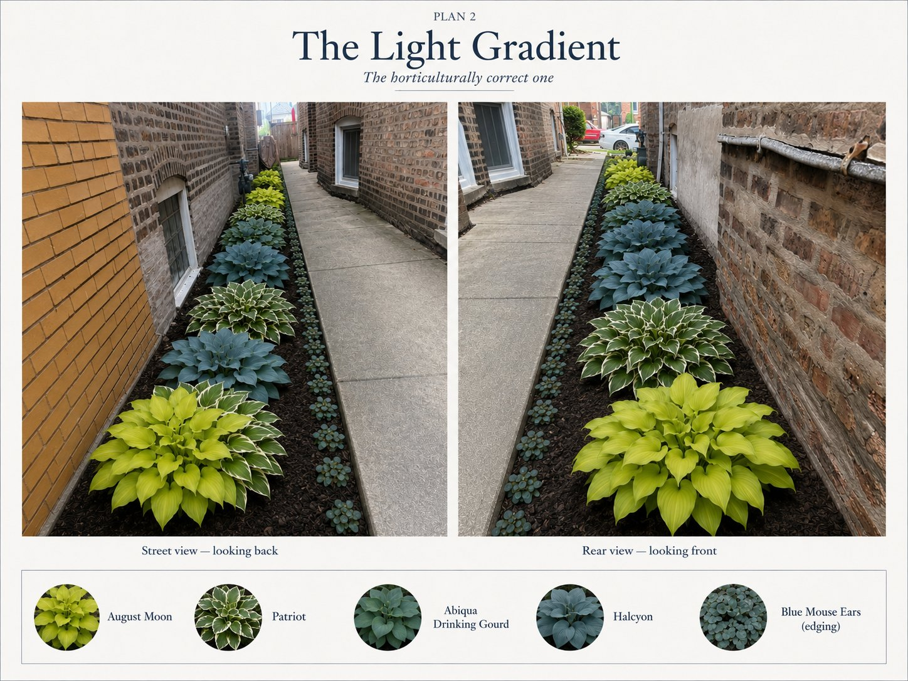

The Gangway Hosta Garden
Six designed plans (plus finalization variations) for ninety-five feet of deep shade between two Chicago bungalows — a real site, a real budget, and the whole Lurvey hosta catalog reasoned through plant by plant.

Photoreal renders, measured top-down plans, a searchable 74-variety plant finder, soil & slug strategy, a full build sequence and budget — and a render kit for generating better images. Reorganized into one calm, navigable app.
Projects
Interactive research tools and FDM-printable models — designed carefully and backed by open source files in the repo.
Made carefully, shared openly
Custom is a personal workshop repo: one-off designs that solved a specific problem or scratched a specific itch, kept public so they're useful to someone else. Everything here is designed for FDM printing or, in Hosta's case, for a spade and a Saturday. It borrows the Polecat platform's front-door craft — the drifting aurora backdrop, instant system-font paint, a light/dark garden palette — without being part of the app fleet.